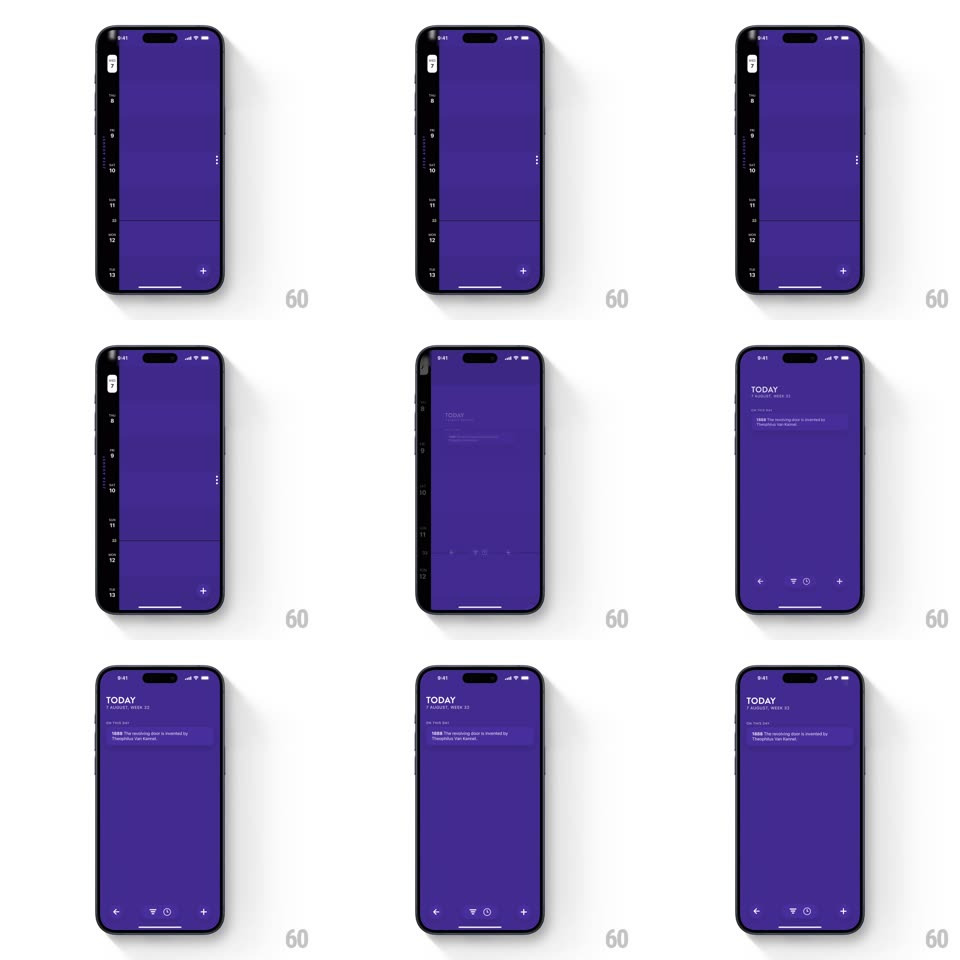

Media
Frame-by-frame

Rebuild this interaction 1:1: Timepage's day-view expand - tap a day and the hourly timeline springs full-width, shoving the date sidebar off the left edge while events stretch into place.

Rebuild this interaction 1:1: Timepage's day-view expand - tap a day and the hourly timeline springs full-width, shoving the date sidebar off the left edge while events stretch into place.
## Integration
Integration: stack-agnostic spec - springs given as stiffness/damping, timed motions as duration + curve; map every value to your framework and animation library of choice.
## Scene
A deep-purple calendar: a narrow date sidebar on the left (stacked day pills, the selected one light) beside a compressed hourly timeline (hour labels 8-13, event blocks squeezed narrow). Expanded state: full-width day view with "TODAY / AUGUST 31" header, a readable event card, and a bottom action bar.
## Motion spec
Pattern: springy sidebar-push expansion.
- Tap a day pill: the sidebar accelerates off-screen left (translateX -100%, 300ms, cubic-bezier(0.5,0,0.2,1)) while the timeline expands to fill the freed width with a spring (~340/24) - the expansion slightly overshoots and settles, giving the springiness.
- Hour labels and event blocks don't just widen: event cards expand from their compressed columns with individual springs (staggered 30ms, ~360/26), their titles fading in once the card is wide enough to hold them (opacity 150ms, threshold-based).
- The header ("TODAY" + date) slides down from -20px with a soft spring (~380/26) and fades in, arriving just after the timeline lands.
- The bottom action bar slides up in the same beat (translateY 100% to 0, 250ms, ease-out).
- Collapse (tap the back arrow or the day again): exact reverse - sidebar springs back in from the left, events squeeze and their titles fade first.
## Calibration
- Palette: deep purple background, light event cards, white text - keep Timepage's high-contrast mood.
- The expansion must read as ONE gesture: sidebar exit and timeline grow share the timeline, no dead gap between them.
## Reduced motion
Crossfade between compressed and expanded layouts; no springs.
## Don't miss
- The compressed timeline keeps showing real hour labels and event slivers - it's a peek, not a placeholder.
- The selected day pill is the anchor: it visually hands off to the "TODAY" header as the sidebar leaves.